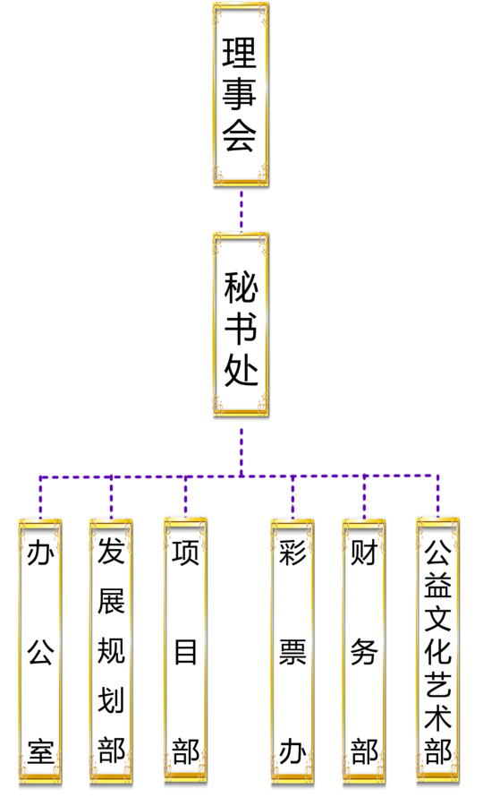

- 首页
- 机构设置
中国法律援助基金会是经国务院批准，于1997年在民政部依法登记成立的公募基金会，是目前我国唯一一家致力于发展法律援助事业的全国性公募基金会。中国法律援助基金会经历了第一、第二届、第三届理事会，2016年6月成立了第四届理事会。中国法律援助基金会的宗旨是保障全体公民享受平等的司法保护，维护法律赋予公民的基本权利。中国法律援助基金会的主要任务是募集法律援助资金，为实施法律援助提供物质支持，促进司法公正，维护社会公平与正义。近年来，在司法部和中国法律援助基金会理事会的领导下，在慈善企业、爱心人士的关心和支持下，中国法律援助基金会根据不同人群和地区的需要，先后设立了22个专项基金，分别是中国优秀学子法律援助专项基金、“592”法律援助专项基金、农民工法律援助专项基金、中国民间对日索赔法律援助专项基金、残疾人法律援助专项基金、妇女家庭权益保障专项基金、老年人法律援助专项基金、未成年人法律援助专项基金、生态环保法律援助专项基金、5.12孤残法律援助专项基金、灾区县级法律援助重建基金、“1＋1”中国法律援助志愿者行动专项基金、中央专项彩票公益金法律援助项目、法治阳光基金、维护民营企业合法权益专项基金、立德树人法律援助专项基金、复员转业军人法律援助专项基金、互联网法律援助专项基金、法治文化公益基金、矿山能源行业法律援助专项基金、寰宇法律援助专项基金、医药卫生行业法律援助专项基金。在这些来自社会的专项基金支持下，在尊重捐赠人意愿的前提下，中国法律援助基金会以科学的管理、诚实的信誉、执着追求公平与正义的精神，严格遵守《慈善法》、《基金会管理条例》、《公益事业捐赠法》等有关法律、法规的规定，按照“费用支出最低化、服务数量最大化、服务质量最优化”原则，成功组织实施了一系列具有广泛社会影响的法律援助项目，资助办理了大量法律援助案件，有效维护了弱势群体的合法权益，受到社会各界广泛赞誉。十多年来，中国法律援助基金会取得了长足发展和进步，先后被民政部评为“4A级社会组织”和“全国先进社会组织”，获得“中国十大法制人物”和“中华慈善奖”等荣誉称号。
第一章 总则
第一条 本基金会的名称是中国法律援助基金会。
英文名称: CHINA LEGAL AID FOUNDATION.
第二条 本基金会属于公募基金会。
本基金会面向公众募捐的地域范围是：中国境内及许可本基金会募捐的国家地区。
第三条 本基金会的宗旨：“坚持以习近平新时代中国特色社会主义思想为指导，坚持中国共产党领导，高举中国特色社会主义伟大旗帜，坚决维护习近平总书记核心地位，坚决维护党中央权威和集中统一领导，自觉践行社会主义核心价值观，保障全体公民享受平等的司法保护，维护法律赋予公民的基本权利，为维护法律正确实施、维护社会公平正义，为全面依法治国、建设中国特色社会主义法治体系和社会主义法治国家，为把我国建设成为富强民主文明和谐美丽的社会主义现代化强国，实现中华民族伟大复兴而奋斗。”
第四条 本基金会根据中国共产党章程的规定，设立中国共产党的组织，开展党的活动，为党组织的活动提供必要条件。 第五条 本基金会遵守宪法、法律、法规和国家政策，践行社会主义核心价值观，遵守社会道德风尚。 第六条 本基金会的原始基金数额为人民币1000万元，来源于社会捐赠。 第七条 本基金会的登记管理机关是中华人民共和国民政部，业务主管单位是中华人民共和国司法部。 第八条 本基金会的住所:北京市。 第二章 业务范围 第九条 本基金会公益活动的业务范围。 （一）依法开展募捐活动或通过义演、义卖活动募集资金； （二）依法利用无形资产开展募集资金； （三）接收来自于国（境）内外的捐赠； （四）在国家政策、法律许可的范围内进行基金增值； （五）开展符合本会宗旨的各项资助活动； （六）开展法律援助事业的研究工作； （七）开展与国（境）内外友好组织和个人之间的友好往来和相互合作。 业务范围中属于法律法规规章规定须经批准的事项，依法经批准后开展。 第三章 组织机构、负责人 第十条 本基金会由7至25名理事组成理事会。 本基金会理事每届任期为5年，任期届满，连选可以连任。 第十一条 理事的资格： 理事应当政治坚定，拥护中国共产党的领导，遵守宪法和法律，践行社会主义核心价值观。同时，应当具备以下条件之一。 （一）热心法律援助事业，在社会各界有一定影响的人士； （二）对本基金会做出重大贡献的人士； （三）司法行政系统有关人士。 第十二条 理事的产生和罢免： （一）第一届理事由业务主管单位、主要捐赠人、发起人分别提名并共同协商确定; （二）理事会换届改选时，由业务主管单位、理事会、主要捐赠人共同提名候选人并组织换届领导小组，组织全部候选人共同选举产生新一届理事; （三）罢免、增补理事应当经理事会表决通过，报业务主管单位审查同意； （四）理事的选举和罢免结果报登记管理机关备案。 第十三条 理事的权利和义务： （一）本基金会的选举权、被选举权和表决权； （二）对本基金会工作的批评建议权和监督权； （三）对基金运作和使用的监督权； （四）遵守本基金会章程，执行理事会决议； （五）维护本基金会合法权益； （六）积极参加本基金会组织的各项活动，宣传和履行本基金会宗旨，为推进中国法律援助事业发展而努力； （七）完成本基金会交办的工作。 第十四条 本基金会的决策机构是理事会。理事会行使下列职权： （一）制定、修改章程； （二）选举、罢免理事长、副理事长、秘书长； （三）决定年度重大业务活动计划，包括资金的募集、管理和使用计划； （四）年度收支预算及决算审定； （五）制定内部管理制度； （六）决定办事机构、分支机构、代表机构的设立、变更和终止； （七）决定由理事长提名的副秘书长的聘任与解聘； （八）听取、审议秘书长的工作报告，检查秘书长的工作； （九）决定基金会的分立、合并或终止； （十）决定其他重大事项。 第十五条 理事会每年召开2次会议。理事会会议由理事长负责召集和主持。 有1/3理事提议，必须召开理事会会议。如理事长不能召集，提议理事可推选召集人。 召开理事会会议，理事长或召集人需提前5日通知全体理事、监事。 第十六条 理事会会议须有2/3以上理事出席方能召开；理事会决议须经出席理事过半数通过方为有效。 下列重要事项的决议，须经出席理事表决，2/3以上通过方为有效： （一）章程的修改； （二）选举或者罢免理事长、副理事长、秘书长； （三）章程规定的重大募捐、投资活动； （四）基金会的分立、合并。 第十七条 理事会会议应当制作会议记录。形成决议的，应当当场制作会议纪要，并由出席理事审阅、签名。理事会决议违反法律、法规或章程规定，致使基金会遭受损失的，参与决议的理事应当承担责任。但经证明在表决时反对并记载于会议记录的，该理事可免除责任。 第十八条 本基金会设监事1至3名。监事任期与理事任期相同，期满可以连任。 第十九条 理事、理事的近亲属和基金会财会人员不得任监事。 第二十条 监事的产生和罢免： （一）监事由主要捐赠人、业务主管单位分别选派； （二）登记管理机关根据工作需要选派； （三）监事的变更依照其产生程序。 第二十一条 监事的权利和义务： 监事依照章程规定的程序检查基金会财务和会计资料，监督理事会遵守法律和章程的情况。 监事列席理事会会议，有权向理事会提出质询和建议，并应当向登记管理机关、业务主管单位以及税务、会计主管部门反映情况。 监事应当遵守有关法律法规和基金会章程，忠实履行职责。 第二十二条 在本基金会领取报酬的理事不得超过理事总人数的1/3。监事和未在基金会担任专职工作的理事不得从基金会获取报酬。 第二十三条 本基金会理事遇有个人利益与基金会利益关联时，不得参与相关事宜的决策；基金会理事、监事及其近亲属不得与基金会有任何交易行为。 第二十四条 理事会设理事长、副理事长和秘书长，从理事中选举产生。 第二十五条 本基金会理事长、副理事长、秘书长必须符合以下条件： （一）具有强烈的政治责任感和事业心，具有胜任领导工作的组织能力，具有良好的社会形象； （二）在本基金会业务领域内有较大影响； （三）身体健康，能坚持正常工作； （四）具有完全民事行为能力； （五）理事长、副理事长、秘书长最高任职年龄不超过70周岁，秘书长为专职。 第二十六条 有下列情形之一的人员，不能担任本基金会的理事长、副理事长、秘书长： （一）属于现职国家工作人员的； （二）因犯罪被判处管制、拘役或者有期徒刑，刑期执行完毕之日起未逾5年的； （三）因犯罪被判处剥夺政治权利正在执行期间或者曾经被判处剥夺政治权利的； （四）曾在因违法被撤销登记的基金会担任理事长、副理事长或者秘书长，且对该基金会的违法行为负有个人责任，自该基金会被撤销之日起未逾5年的。 第二十七条 本基金会的理事长、副理事长、秘书长每届任期5年，连任不超过两届。因特殊情况需超届连任的，须经理事会特殊程序表决通过，报业务主管单位审查并经登记管理机关批准同意后，方可任职。 第二十八条 本基金会理事长为基金会法定代表人。本基金会法定代表人不兼任其他组织的法定代表人; 本基金会法定代表人应当由中国内地居民担任; 本基金会法定代表人在任期间，基金会发生违反《慈善法》和本章程的行为，法定代表人应当承担相关责任。因法定代表人失职，导致基金会发生违法行为或基金会财产损失的，法定代表人应当承担个人责任。 第二十九条 本基金会理事长行使下列职权： （一）召集和主持理事会会议； （二）检查理事会决议的落实情况； （三）代表基金会签署重要文件； （四）主持理事长办公会，决定阶段性重要工作； （五）与业务主管单位协商一致后，提名理事候选人,由理事会选举产生； （六）与业务主管部门协商一致后，提名副理事长、秘书长候选人，由理事会选举产生。 本基金会副理事长、秘书长在理事长领导下开展工作，秘书长行使下列职权： （一）组织实施理事会决议，落实年度工作计划； （二）拟订资金的募集、管理和使用计划； （三）拟订基金会的内部规章制度，报理事会审批； （四）主持秘书长办公会，协调各机构开展工作；决定各机构专职工作人员的聘用与解聘； （五）提名基金会部门负责人的聘任与解聘，报理事会审批； （六）章程和理事会赋予的其他职权。 第四章 财产的管理和使用 第三十条 本基金会为公募基金会，本基金会的收入来源于： （一）国家财政支持资金； （二）组织募捐的收入； （三）自然人、法人或其他组织自愿捐赠； （四）投资收益； （五）其他合法收入。 第三十一条 本基金会组织募捐、接受捐赠，应当遵守法律法规，符合章程规定的宗旨和公益活动的业务范围。 第三十二条 本基金会组织募捐时，应当向社会公布募得资金后拟开展的公益活动和资金的详细使用计划。重大募捐活动应当报业务主管单位和登记管理机关备案。 本基金会组织募捐，不得以任何形式进行摊派及变相摊派。 第三十三条 本基金会的财产及其他收入受法律保护，任何单位、个人不得侵占、私分、挪用。 第三十四条 本基金会根据章程规定的宗旨和公益活动的业务范围使用财产；捐赠协议明确了具体使用方式的捐赠，根据捐赠协议的约定使用。 接受捐赠的物资无法用于符合本基金会宗旨的用途时，基金会可以依法拍卖或者变卖，所得收入用于捐赠目的。 第三十五条 本基金会财产主要用于： （一）通过不同形式，支持各地区一体化法律援助机构对符合《法律援助条例》规定的公民提供法律援助； （二）资助有关法律援助项目，开展法律援助活动； （三）支付本基金会行政办公开支及工作人员工资福利及其余符合有关规定的支出。 第三十六条 本基金会的重大募捐、投资活动是指： （一）“为实现公平和正义·法律援助在中国”系列大型公益募捐活动； （二）与有关单位合作的项目筹资； （三）法律援助专项募捐活动； （四）法律援助专项活动的支出； （五）专项法律援助基金的设立和支出； （六）支持有关法律援助活动的支出。 第三十七条 本基金会按照合法、安全、有效的原则实现基金的保值、增值。 第三十八条 本基金会每年用于从事章程规定的公益事业支出，不得低于上一年总收入的70％。 本基金会工作人员工资福利和行政办公支出不超过当年总支出的10％。 第三十九条 本基金会开展公益资助项目，应当向社会公开所开展的公益资助项目种类以及申请、评审程序。 第四十条 捐赠人有权向本基金会查询捐赠财产的使用、管理情况，并提出意见和建议。对于捐赠人的查询，基金会应当及时如实答复。 本基金会违反捐赠协议使用捐赠财产的，捐赠人有权要求基金会遵守捐赠协议或者向人民法院申请撤销捐赠行为、解除捐赠协议。 第四十一条 本基金会可以与受助人签订协议，约定资助方式、资助数额以及资金用途和使用方式。 本基金会有权对资助的使用情况进行监督。受助人未按协议约定使用资助或者有其他违反协议情形的，本基金会有权解除资助协议。 第四十二条 本基金会应当执行国家统一的会计制度，依法进行会计核算、建立健全内部会计监督制度，保证会计资料合法、真实、准确、完整。 本基金会接受税务、会计主管部门依法实施的税务监督和会计监督。 第四十三条 本基金会配备具有专业资格的会计人员。会计不得兼出纳。会计人员调动工作或离职时，必须与接管人员办清交接手续。 第四十四条 本基金会每年1月1日至12月31日为业务及会计年度，每年3月31日前，理事会对下列事项进行审定： （一）上年度业务报告及经费收支决算； （二）本年度业务计划及经费收支预算； （三）财产清册。 第四十五条 本基金会进行年报、换届、更换法定代表人以及清算时，应当进行财务审计。 第四十六条 本基金会按照《基金会管理条例》规定接受登记管理机关组织的年度检查。 第四十七条 本基金会通过登记管理机关的年度检查后，将年度工作报告在登记管理机关指定的媒体上公布，接受社会公众的查询、监督。 第五章 终止和剩余财产处理 第四十八条 本基金会有以下情形之一，应当终止： （一）完成章程规定的宗旨的； （二）无法按照章程规定的宗旨继续从事公益活动的； （三）基金会发生分立、合并的； （四）法律法规规定的其他情形。 第四十九条 本基金会终止，应在理事会表决通过后15日内，报业务主管单位审查同意。经业务主管单位审查同意后15内，向登记管理机关申请注销登记。 第五十条 本基金会办理注销登记前，应当在登记管理机关、业务主管单位的指导下成立清算组织，完成清算工作。 本基金会应当自清算结束之日起15日内向登记管理机关办理注销登记；在清算期间不开展清算以外的活动。 第五十一条 本基金会注销后的剩余财产，应当在业务主管单位和登记管理机关的监督下，通过以下方式用于公益目的：组织架构

秘书处各部室主要职能 办公室 主要职能：负责基金会的行政、人事、后勤以及联络等工作。 发展规划部 主要职能：承担研究、规划基金会建设与发展、宣传等工作。 项目部 主要职能：负责组织开展“1+1”中国法律援助志愿者行动，组织实施基金会重大筹资工作。 彩票办 主要职能：负责组织实施中央专项彩票公益金法律援助项目。 财务部 主要职能：负责财务工作以及社会捐款的财务管理。 公益文化艺术部 主要职能：负责获赠艺术品的收藏、宣传、和拍卖工作，筹集法律援助资金。